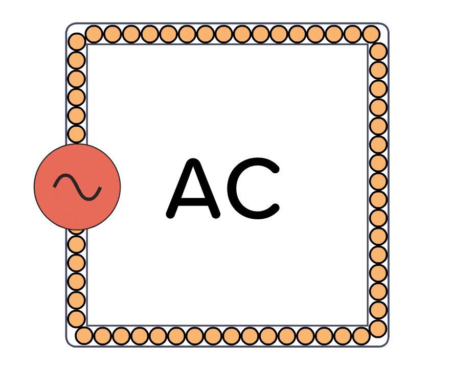

1 dozen = 12 bananas, apples, dicks, anything
1 coulomb = 6.24 x 1018 electrons.
Now, on the basis of how the electrons flow, current can be classified into two distinct types which are:
A type of current where the electrons flow in a single direction only is termed as direct current. The polarity [polarity refers to the positive and negative terminals. Conventionally, current flows from positive to negative terminal.] of DC does not change with time. We also use direct current to power most of our daily household electronics because the voltage delivery of DC is constant, the voltage stuff will make more sense later on, don't worry.
The following is a visual representation of flow of electrons in DC.
A type of current where the electrons reverse its direction and changes its magnitude constantly at regular intervals of time is termed AC. The polarity of AC also changes continuously due to the reversal of direction of flow of electrons. AC is used to deliver electricity over large distances efficiently with the help of transformers.[Don't worry, the reason for which AC is used over DC to deliver electricity will be explained below.]
The following is a visual representation of flow of electrons in AC.
Voltage/Potential-difference is the force that is responsible for moving electrons from one position to another. Essentially it can also be defined as the difference in levels of potential energy of electrons between two points. [Matters with high energy levels always try to move to lower energy levels for stability, this is a Universal law. So, when a difference in potential energy levels of electrons between two points take place, the electrons with high potential energy level always moves towards low potential energy levels for stability and this is how electrons flow due to voltage/PD(Potential-difference). This definition of voltage is slightly more complex and detailed but it is the same as the previous simple definition in essence as they both explain that voltage/potential-difference is just the force that moves electrons.] EMF(Electro Motive Force) is very similar to voltage as it also makes electrons flow but there's a teeny tiny difference, while voltage creates the difference of levels of potential energy which makes the electrons move from higher energy levels to lower energy levels, EMF on the other hand maintains the difference in energy levels by charging the electrons in the low energy levels to high energy levels. In simple terms, EMF is the driving force that maintains the voltage/PD by carrying electrons from a low potential energy state to a high potential energy state.
Understanding how a battery works is the best way to understand voltage fully. We know that, current flows from positive to negative terminal. This happens due to the difference in energy levels of positive and negative terminal, positive terminal is the higher energy level whereas the negative terminal is lower energy level, this is why current flows from positive to negative terminal. You may have seen batteries with label like "1.5V", this means that a potential energy difference of 1.5J exists between the positive and negative terminal. Now, wouldn't this mean the battery would rapidly discharge as all electrons of high energy level move towards the low energy level at a blink of an eye? That would be true if it wasn't for EMF. Through a series of chemical reaction a battery produces EMF to maintain the difference in energy levels by charging up the electrons of low energy levels to high energy levels. Of course, once the battery starts to exhaust its chemicals needed to produce the EMF, the voltage also starts to drop along with the EMF, eventually becoming 0.
Summary: Voltage/Potential-difference is the force that makes electrons move from one place to another. EMF is the driving force that carries electrons from low potential energy levels to high potential energy levels. Voltage/PD and EMF are all measured in terms of Volts which is denoted by "V".
MOTOR EFFECT: We know magnetic fields are produced by conductive bodies when current is applied. Now, when a conductive body with current being passed through is placed in the magnetic field of an another magnet, the magnetic fields repel each other and rotates the conductive body, this is the motor effect of electricity.
Ohm's law: This law shows the relationship between voltage, current and resistance.[resistance is the opposition provided by the conductive body to the flow of current] This law states that,"The voltage of a conductive body will be directly proportional to the current flowing through it when all other physical conditions and temperature remain constant." V=IR where V is voltage, I is current and R is resistance, we can see that voltage and current are directly proportional but the resistance is inversely proportional to current and voltage.
Law of mutual inductance:The law of mutual induction states that,"The changing magnetic field in the primary coil of a transformer generated by alternating current induces EMF in the secondary coil." This is like the retarded brother of the Faraday's law. This law will be more clear when you understand how the magnetic fields of AC and DC behave.
We know that the flow of electrons through a conductive body produces a magnetic field however, the magnetic fields generated by AC and DC differ from eachother. The main and the most important difference is, the magnetic field produced by AC pulsates [pulsate means continuous enlargement and contraction, similar to how our heart beats.] due to the change of direction of the electrons in a set interval of time and the magnetic field generated by DC is very stable and rigid as the electrons keep on flowing in a single direction without any disturbance.
Now, only AC voltage can be altered by transformers wherase DC voltage cannot because of the way their magnetic fields behave. If we recall the law of electromagnetic induction, magnetic fields/fluxes have to be continuously disrupted by a conductive body for EMF to be induced in the conductive body to generate current, the magnetic field of AC continuously pulsates due to which constant disruption of the magnetic fluxes take place between the coils of a transformer whereas the magnetic fields of DC is stable and rigid due to which the disruption of the magnetic flux does not take place continuously between the two coils due to which EMF cannot be induced in the secondary coil.
[I have covered the bare basics and some complex topics and laws here, now once you understand these all, you shouldn't have problem reading through the book and understand it in the first go. If you still have confusions left, you know where to find me.]